Our Thanksmas Celebration
I am so excited to sit down and share with you all that I have been doing. On November 17th, 2018 we will be hosting “Thanksmas” at our house, this is a “holiday” that we have created when our family can’t gather together for Thanksgiving or Christmas. We combine the two holidays and celebrate our togetherness. This year, it feels extra special (if that is possible) because we have family coming in from different pockets of the country. We are about to be surrounded by sixteen family members for a week of celebration.
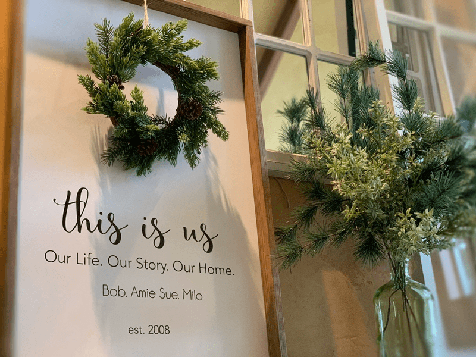
So, with sharing that… you can probably guess that I have been busy decorating the house and prepping food. And if you guessed that, you are right. I have been enjoying this glorious time of preparation except we had a few snafus in the midst of it all. If you are in the Nouveauraw Facebook group, you may already be aware that Bob ended up having two unexpected surgeries just within a week of each other. It was all quite a scare, but in the end, Bob and I feel so blessed to have weathered through it together. We have been together a smidgen over a decade now, and my husband still manages to put me in the state of awe. To see him go through all that he did, and still managed to breathe joy into the air. He stayed in good humor and demonstrated unconditional kindness to all those that help nurse him back to health.
Bob is mending well and now is at the point of getting itchy to re-enter back into life’s rhythm, BUT he still has some recovery time ahead of him. Thank you all for sending up your prayers, positive energy, and for all the supporting comments and emails during this time. It gave us that extra strength to get through it all.
While Bob has been healing and in between my nursing duties (best job ever!) I have been busy creating a loving, welcoming, and warm atmosphere to envelop our loved ones. There is no greater joy for me, then to create a magical memory in the hearts of those that enter our home. Whether their stay is for fifteen minutes or two weeks, it doesn’t matter. What matters is that we get to fill our hearts with love… no one should ever leave here empty handed hearted. :)
So, if you don’t mind, I would like to share some of the creations that I have been working on these last few weeks. You will start to notice a reoccurring theme of Christmas trees and the colors green and white. I wanted to keep things festive, yet clean and simple… with a few vignettes of eye candy to keep the para-sympathetic nervous system (rest & digest) engaged.
Breakfast Bar
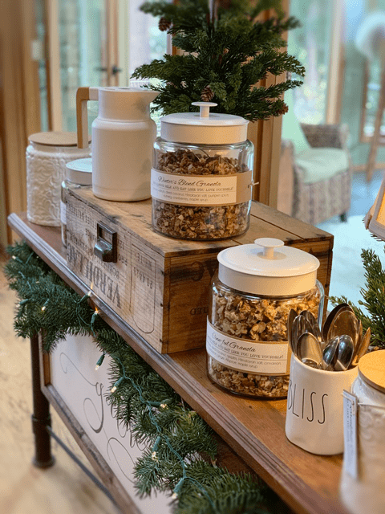
Let’s start in the heart of the home, the kitchen. To be a gracious hostess, you must learn to be present, to be in the moment so one can thoroughly enjoy all that surrounds them. For me, to be present, preparation is one of the key elements that help me in achieving this. That not only means fixing up the house but it also means preparing what foods I can in advance. With this in mind, I decided to create a “Breakfast Bar” that is set up for self-service.
By creating a similar station, you will bring the ease and beauty of breakfast made just the way each of your guests like it. And if your family is anything like mine, not everyone gets up at the same time which makes it hard to have a planned meal altogether.
For our “Breakfast Bar” I created four different raw granola/muesli cereals. I placed them in glass jars and labeled each one making sure to include the ingredients. When creating a display you want to lure everyone in visually, that is why glass canisters are perfect, and you can see all the wonderful foods from a distance. Plus, as a host, you can easily spot if the things need to be replenished.
I also created two other containers that held power bars and instant organic oatmeal packages. We have an instant hot water dispenser so they can easily create a warm cereal. I also have a hot/cold carafe (thermos) filled with fresh homemade almond milk for their breakfast bowls. And let’s not forget raw, cultured coconut yogurt should they decide to pass on the almond milk. Options are key. This breakfast bar will be set up 24/7 since I chose foods that can be enjoyed throughout the day as a snack as well.
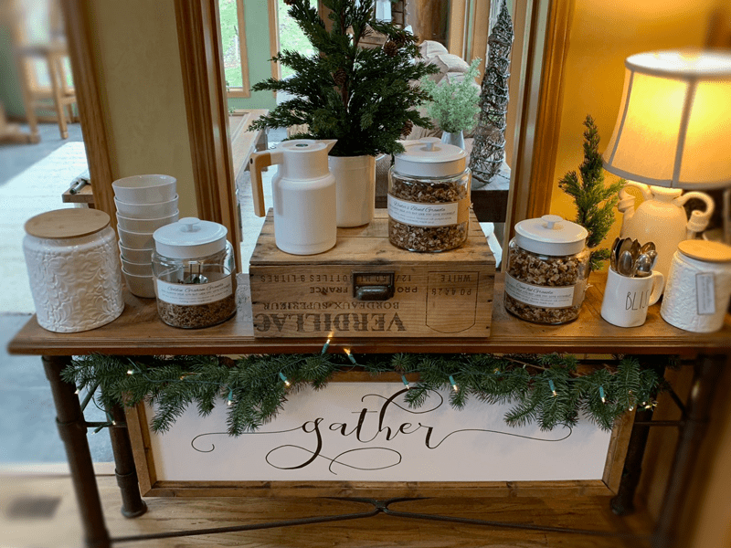
Beside the “Breakfast Bar,” we have Bob’s espresso station where he loves to make signature drinks for everyone who comes into our house. I love to hear him banging, tapping, and the sound of the hissing espresso machine as he whips up one of his specials. He is like a mad scientist in there! As we round the kitchen, I have another coffee station set up for those in my family who are too old fashion for those new-fangled coffee drinks… you know, for those who drink plain’ ole black coffee. And of course, there will always be a fruit bowl set out for quick snacking. Other than that, the fridge is stocked with all other sorts of goodies so that everyone can help themselves.
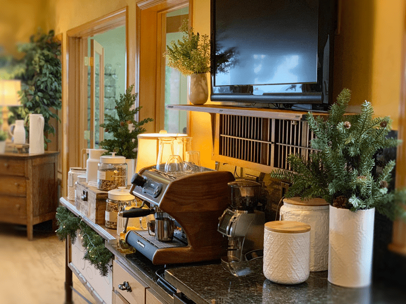
When creating a Breakfast Bar… look around your house for tables that might work. I stole this table from my entryway (which I picked up at a garage sale for $25), I velcroed the “Gathering” sign to the frame of the stand, tucked in some Christmas greens, and garnished it with a string of clear lights. The glass containers were hiding in my pantry, sitting empty with black lids. I gave them a quick coating of white spray paint and designed a label. Be creative with what you have!
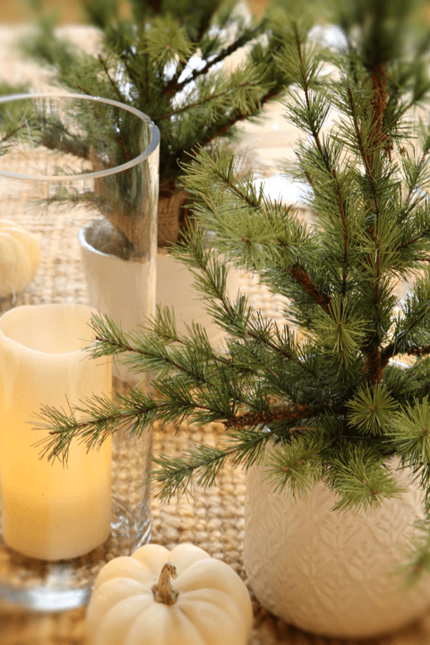
Family Dinners
We only have a few family dinners planned and will play the rest of the meals by ear. When you have so many people in your house at one time, they tend to create little side adventures on the spur of the moment.
I love giving our guests that freedom to come, go, and explore! But for our sit down meals (such as our Thanksmas meal) I will be setting up our main table that sits ten people with a pop-up table for the other six people.
For the main table, I have a jute rug as the “table runner.” Sounds odd huh? It’s a 5 X 8′ rug, so that gives you an idea as to how large the table is. I didn’t take it off the floor and put it on the table, I can hear you already. Haha For the placemats, I used inexpensive flour sack fabric. It’s soft, flowing, white, and can double as a napkin.
The rest of the decor is simple. Glass containers to hold stress-free battery operated candles for a soft ambiance, real white pumpkins to create an infusion of Thanksgiving and Christmas, and small Christmas trees staggered down the center. It looks a little bare right now, but once it fills up with food, it’s going to be over-flowing with charm, warmth, and comfort.
When it comes to decorating, look around your house and think outside the norm. Don’t underestimate the power of simplicity. A person doesn’t need to spend a lot of money… remember, in the end, surrounding yourself with friends and family is what it is all about.
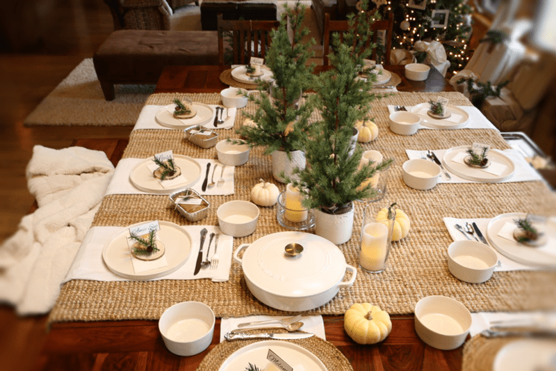
Again, my approach to the table is simple, rustic, elegance. Since our table is huge, I always love creating a display in the center. It demands something grand, BUT a good rule of thumb is to create a centerpiece that doesn’t divide the North from the South. You want to be able to converse with those on the other side. So once you put all your decor in place, do a test run and sit in each chair to see what you see.
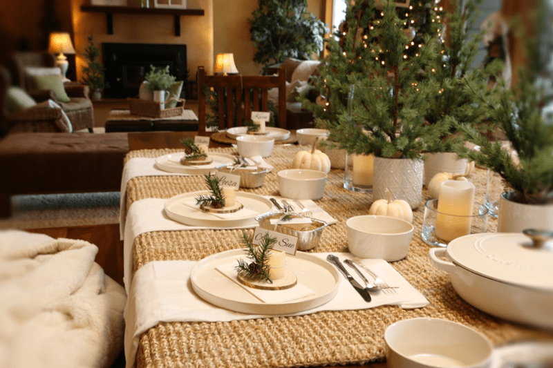
Normally I don’t do assigned seating, but this time around I decided to go the extra mile. I wanted to ensure that those who had physical limitations would be seated in an area where it was easy to get up and down. Those who are younger and more agile could sit in the “cozier” spots if you know what I mean. Hehe Like the middle of the bench that requires a little yoga act to get in.
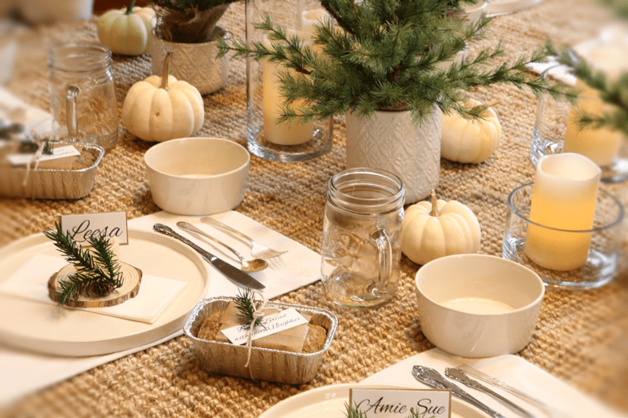
I won’t be getting into the full menu planning but one thing I did do was bake ten mini loaves of bread (not vegan or raw, though they could be). I will place one between every other guest with a little card that says to break bread with your neighbor. Breaking bread means connection and I couldn’t think of a better way to start the ball rolling.
Christmas Tree and Presents
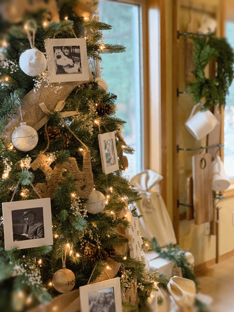
Since we are also celebrating Christmas, I sprinkled a little Christmas magic in every room. The main tree is decorated with earthy tones. To add a fresh, whimsical look, I bought some large bouquets of fresh babies breath and poked it in throughout the tree.
At first glance, it looks as though a sprinkle of snow had just fallen on the branches. It stays fresh for about a day and then it dries right into place, holding its beauty.
The main ornaments are ones that I made. I purchased some inexpensive 4″x4″ unfinished frames from the craft store ($1 each). I then whitewashed them, giving a little rustic distressed look.
While they were drying, I selected photos of each person who was attending our Thanksmas celebration and printed them out in black and white. Then popped them into the frame, stapled some jute to the back and hung them up around the tree. It will be fun to listen to the stories that everyone will share as they look through the photo ornaments.
Let’s venture down to the base of the tree where all the gifts rest. Making and giving gifts is right up there as my all time favorite thing to do… I LOVE to create special presents for each person.
One practice that Bob and I started five years ago was to eliminate wrapping paper (since most are not recyclable). Instead, I create our wrapping paper from cloth so it can be reused over and over. I either make bags tieing them closed with jute, or I hem the four sides of the fabric and find creative ways to fold the wrapping. I did a post on this, which you can read about (here and here). It’s alarming how much holiday wrap gets thrown into the landfill! Tackling the condition of our planet seems very overwhelming, but we can make a difference with just one small act.
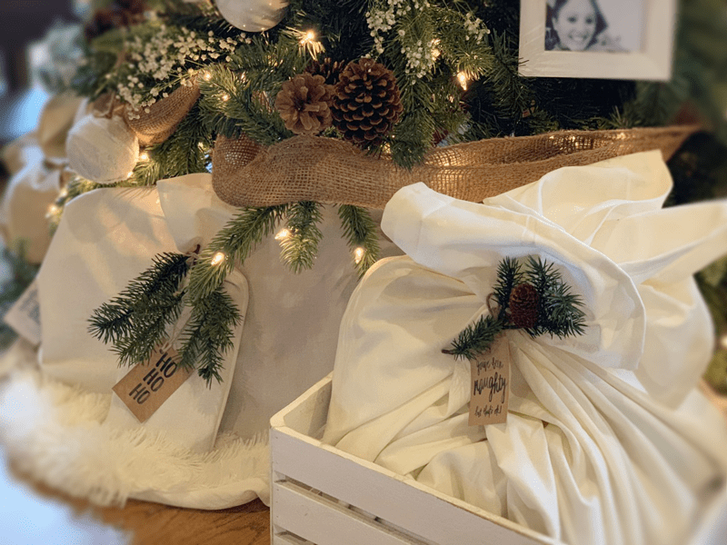
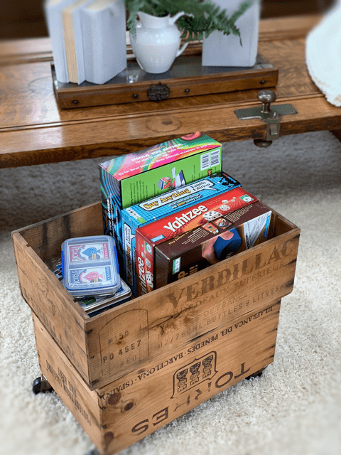
Play Zones
To create a relaxing atmosphere, I tucked some games in an old crate that I had and placed it in the sunroom. What could be more fun than to snuggle up to a game board, with a crackling fire in the fireplace, hot chocolate, and snacks!
Lose the mentality that games are just kids… they are for all ages! I find that playing games help to keep us present, engaged, and focused. When we are present, we get to thoroughly enjoy those around us.
When creating a play zone, think about the location; the lighting, the sitting arrangement, and your audience. Younger folks might find it fun to sit on pillows on the floor, hunched over the coffee table, whereas a more mature audience might prefer a table with chairs.
You will want good lighting so people can read the cards or game board. Also be sure to allow snacks and drinks in the game zone. They go hand in hand. Select ones that don’t require utensils and make sure they aren’t too sticky. We don’t want to the game board to get all gummy.
If you don’t have any board games, check out your local thrift store and pick out a few. They are always good to have tucked away for such occasions.
Create a Welcoming Warmth
We live in the midst of an orchard, so when guests enter our house, we ask that they remove their shoes, which can leave people with chilly tootsie-pops… so to remedy that, we provide slippers for them. Inside our entry closet, I have a shoe hanger right inside the door filled with all sizes of slippers. I made a sign that is easily seen as soon as they enter the house. See photo below.
When the chilly months arrive, then blankets are always welcome. I LOVE the lap-sized ones. You will find them scattered all over our house. When I sit down, I want a little blanket to snuggle into… so if I want that, surely my guests do too. I have two blanket stations. One right when you enter into the house and a second one in the sunroom. Outside of these stations, you will find blankets draping over chairs. Call me silly, but don’t call me chilly!
Random House Decor
I realize that this posting is getting loooong and if you are still with me, I am impressed with your determination. Below I will share some random decor photos of the main part of the house. If I tackled everything I did you would be snoozing!
-
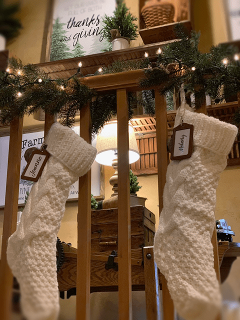
-
Everyone has a stocking waiting for them. 16 stockings! What a sight.
-
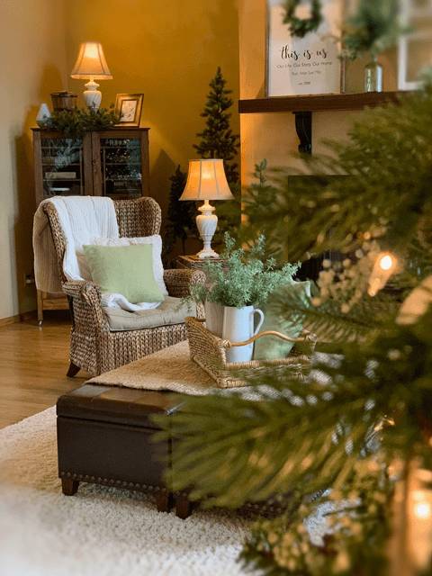
-
Just a peek into the living room area.
-
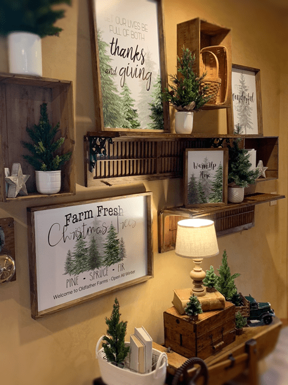
-
This is our hallway. I created all the signs and had Walgreens print them. Bob helped me cut the wood to create the frames.
-
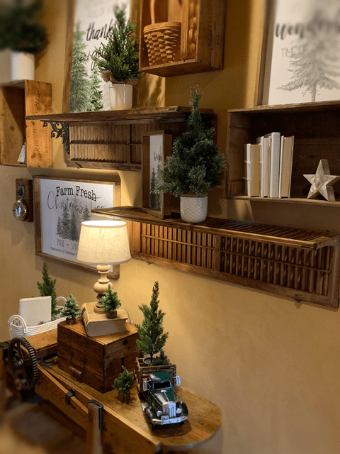
-
I created shelves from $2.00 used shutters and hung stained wine boxes on the wall to create dimension. So much fun!
-
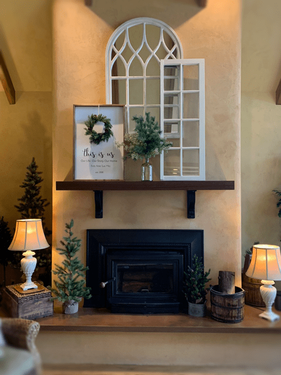
-
I decided to keep the mantel simple as well this year.
-
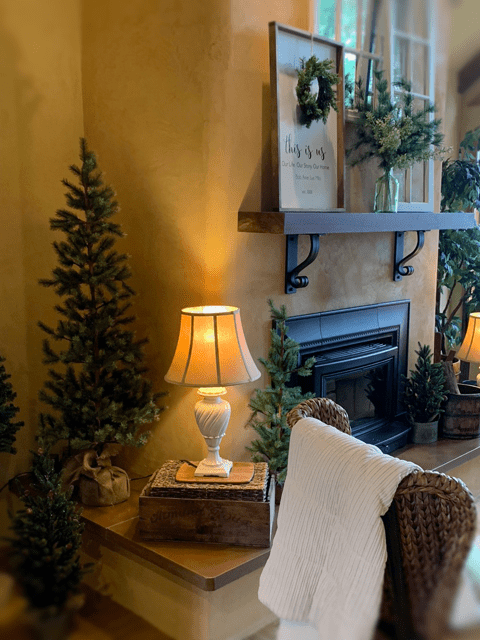
-
I sprinkled Christmas trees of all sizes around the house. This created pockets of color and coziness.
-
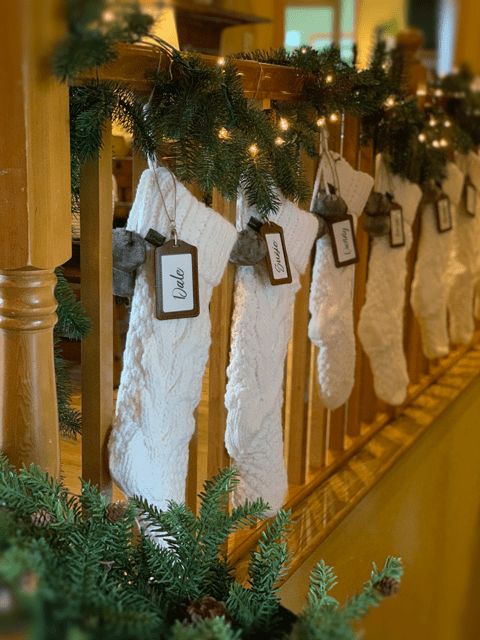
-
For the stocking name tags, I used luggage tags and attached them to the stocking with twine.
-

-
Just having way too much fun decorating.
Oh man, I really wish I could share every detail with you. I had such a blessed time getting the house ready for our family gathering. I hope you enjoyed it. The family will be pulling in shortly, so I better wrap this up. Keep an eye on your inbox because soon our paid members will be getting a Thanksmas gift from Bob and I. blessings, amie sue
© AmieSue.com